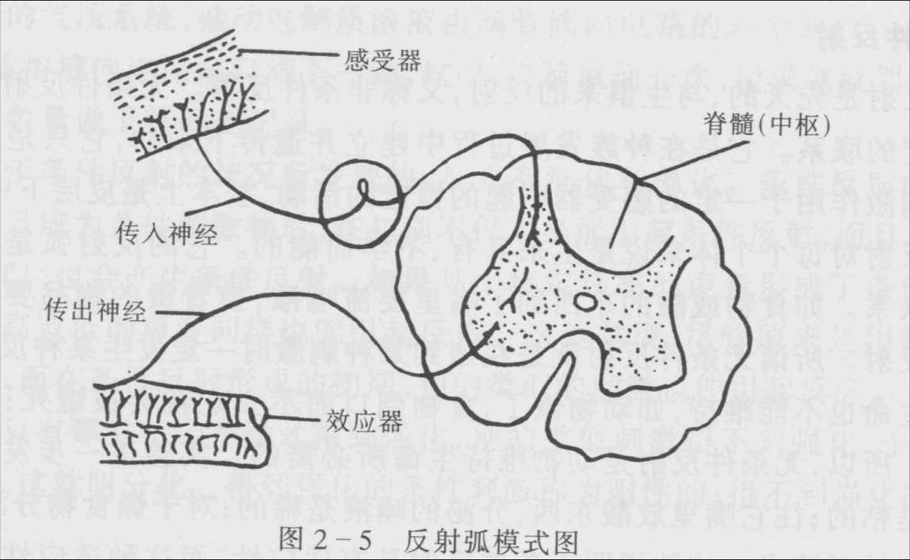

00:00
第三单元 高级神经活动的反射学说
一、兴奋和抑制
1．兴奋是指神经活动由静息状态或较弱的活动状态，转为活动的状态或较强的活动状态。
2．抑制是指神经活动由活动状态或较强的活动状态，转为静息状态或较弱的活动状态。
二、反射、反射弧和反馈
1．反射是有机体在神经系统的参与下，对内外环境刺激作出的规律性反应。
2．实现反射活动的神经通路叫反射弧，它由感受器、传入神经、反射中枢、传出神经和效应器五个部分组成。
3. 反馈：是指反射活动的结果又返回到神经中枢，使神经中枢及时获得效应器活动的信息，从而更有效地调节效应器活动的过程。

三、无条件反射和条件反射
1.无条件反射是动物和人生而具有，不学而会的反射。
10:50
2.条件反射是个体通过模仿、学习、在无条件反射的基础上形成的反射。
3.巴甫洛夫所研究的条件反射称为经典条件反射，把斯金纳所研究的条件反射称为操作条件反射，或工具条件反射。
四、第一信号系统和第二信号系统
五、动力定型